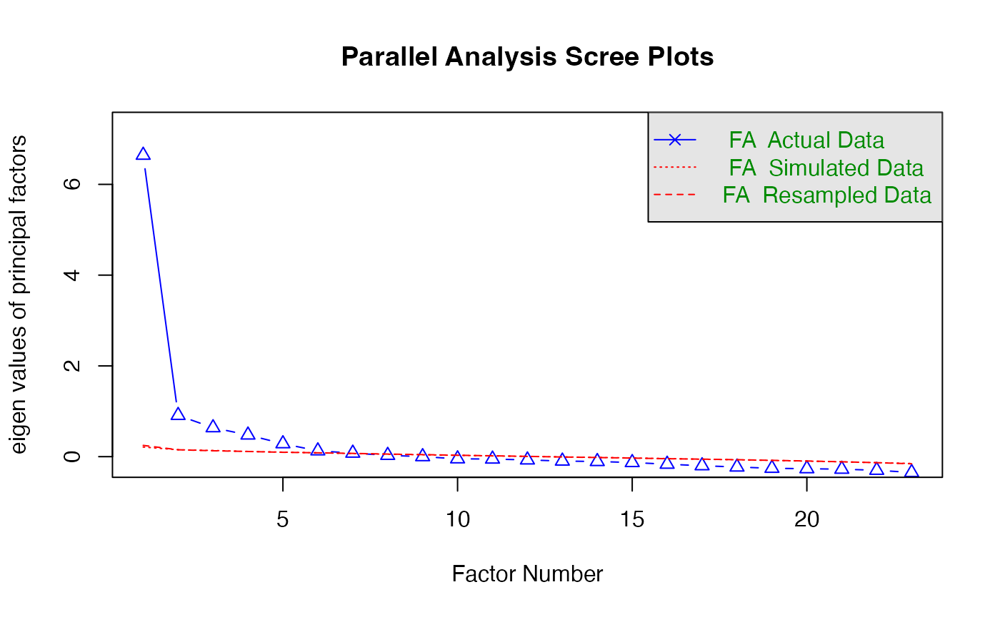

Exploratory Factor Analysis
lecture_efa.RmdTerminology
- Measured variables – the real scores from the experiment
- Squares on a diagram
- Latent variables – the construct the measured variables are supposed
to represent
- Not measured directly
- Circles on a diagram
What is EFA?
- Factor analysis attempts to achieve parsimony (data reduction) by:
- Explaining the maximum amount of common variance in a correlation matrix
- Using the smallest number of explanatory constructs (factors)
- Common variance is the overlapping variance between items
- Unique variance is the variance only related to that item (error variance)
Directionality
- Factors are thought to cause the measured variables
- Therefore, we are saying that the measured variable is predicted by the factor

Why use EFA?
- Understand structure of set of variables
- Construct a scale to measure the latent variable
- Reduce data set to smaller size that still measures original information
The Example Data
- We are going to build a scale that measures the anxiety that statistics provokes in students
- Dataset is from the Field textbook
- Statistics makes me cry
- My friends will think I’m stupid for not being able to cope with R
- Standard deviations excite me
- I dream that Pearson is attacking me with correlation coefficients
- I don’t understand statistics
- I have little experience of computers
- All computers hate me
- I have never been good at mathematics
- My friends are better at statistics than me
- Computers are useful only for playing games
- I did badly at mathematics at school
- People try to tell you that R makes statistics easier to understand but it doesn’t
- I worry that I will cause irreparable damage because of my incompetence with computers
- Computers have minds of their own and deliberately go wrong whenever I use them
- Computers are out to get me
- I weep openly at the mention of central tendency
- I slip into a coma whenever I see an equation
- R always crashes when I try to use it
- Everybody looks at me when I use R
- I can’t sleep for thoughts of eigenvectors
- I wake up under my duvet thinking that I am trapped under a normal distribution
- My friends are better at R than I am
- If I’m good at statistics my friends will think I’m a nerd
The Example Data
library(rio)
library(psych)
master <- import("data/lecture_efa.csv")
head(master)
#> Q01 Q02 Q03 Q04 Q05 Q06 Q07 Q08 Q09 Q10 Q11 Q12 Q13 Q14 Q15 Q16 Q17 Q18 Q19
#> 1 4 5 2 4 4 4 3 5 5 4 5 4 4 4 4 3 5 4 3
#> 2 5 5 2 3 4 4 4 4 1 4 4 3 5 3 2 3 4 4 3
#> 3 4 3 4 4 2 5 4 4 4 4 3 3 4 2 4 3 4 3 5
#> 4 3 5 5 2 3 3 2 4 4 2 4 4 4 3 3 3 4 2 4
#> 5 4 5 3 4 4 3 3 4 2 4 4 3 3 4 4 4 4 3 3
#> 6 4 5 3 4 2 2 2 4 2 3 4 2 3 3 1 4 3 1 5
#> Q20 Q21 Q22 Q23
#> 1 4 4 4 1
#> 2 2 2 2 4
#> 3 2 3 4 4
#> 4 2 2 2 3
#> 5 2 4 2 2
#> 6 1 3 5 2Steps to Analysis
- Data screening (not shown, use last week’s notes!)
- Additionally, you need at least interval measurement for the analyses shown here
- Enough items to group into factors (recommended 3-4 per potential factor)
- How many factors should you use?
- Simple structure
- Adequate solutions
Kaiser criterion
- Old rule: extract the number of eigenvalues over 1
- New rule: extract the number of eigenvalues over .7
- What the heck is an eigenvalue?
- A mathematical representation of the variance accounted for by that grouping of items

Parallel analysis
- A statistical test to tell you how many eigenvalues are greater than
chance
- Calculates the eigenvalues for your data
- Randomizes your data and recalculates the eigenvalues
- Then compares them to determine if they are equal
Finding factors/components
number_items <- fa.parallel(master, #data frame
fm="ml", #math
fa="fa") #only efa
#> Parallel analysis suggests that the number of factors = 6 and the number of components = NASimple structure
- Simple structure covers two pieces:
- The math used to achieve the solution: maximum likelihood
- Rotation to increase communality between items and aid in interpretation

Rotation
- Orthogonal assume uncorrelated factors: varimax, quartermax, equamax
- Oblique allows factors to be correlated: oblimin, promax
- Why would we even use orthogonal?
Simple structure/solution
- Looking at the loadings: the relationship between the item and the
factor/component
- Want these to be related at least .3
- Remember that r = .3 is a medium effect size that is ~10% variance
- Can eliminate items that load poorly
- Difference here in scale development versus exploratory clustering
Run an EFA
EFA_fit <- fa(master, #data
nfactors = 2, #number of factors
rotate = "oblimin", #rotation
fm = "ml") #math
#> Loading required namespace: GPArotationLook at the results
EFA_fit
#> Factor Analysis using method = ml
#> Call: fa(r = master, nfactors = 2, rotate = "oblimin", fm = "ml")
#> Standardized loadings (pattern matrix) based upon correlation matrix
#> ML1 ML2 h2 u2 com
#> Q01 0.41 0.21 0.310 0.69 1.5
#> Q02 -0.40 0.17 0.111 0.89 1.3
#> Q03 -0.62 0.02 0.369 0.63 1.0
#> Q04 0.49 0.17 0.366 0.63 1.2
#> Q05 0.45 0.10 0.269 0.73 1.1
#> Q06 0.55 0.00 0.301 0.70 1.0
#> Q07 0.66 0.02 0.454 0.55 1.0
#> Q08 -0.08 0.86 0.670 0.33 1.0
#> Q09 -0.44 0.25 0.128 0.87 1.6
#> Q10 0.40 0.02 0.167 0.83 1.0
#> Q11 0.16 0.66 0.593 0.41 1.1
#> Q12 0.70 -0.05 0.446 0.55 1.0
#> Q13 0.60 0.09 0.429 0.57 1.0
#> Q14 0.64 0.00 0.415 0.58 1.0
#> Q15 0.47 0.13 0.313 0.69 1.1
#> Q16 0.58 0.11 0.418 0.58 1.1
#> Q17 0.17 0.64 0.570 0.43 1.1
#> Q18 0.71 -0.02 0.493 0.51 1.0
#> Q19 -0.47 0.09 0.177 0.82 1.1
#> Q20 0.42 -0.01 0.169 0.83 1.0
#> Q21 0.62 0.03 0.407 0.59 1.0
#> Q22 -0.34 0.09 0.090 0.91 1.2
#> Q23 -0.15 0.03 0.018 0.98 1.1
#>
#> ML1 ML2
#> SS loadings 5.70 1.98
#> Proportion Var 0.25 0.09
#> Cumulative Var 0.25 0.33
#> Proportion Explained 0.74 0.26
#> Cumulative Proportion 0.74 1.00
#>
#> With factor correlations of
#> ML1 ML2
#> ML1 1.00 0.58
#> ML2 0.58 1.00
#>
#> Mean item complexity = 1.1
#> Test of the hypothesis that 2 factors are sufficient.
#>
#> df null model = 253 with the objective function = 7.55 with Chi Square = 19334.49
#> df of the model are 208 and the objective function was 1.13
#>
#> The root mean square of the residuals (RMSR) is 0.05
#> The df corrected root mean square of the residuals is 0.06
#>
#> The harmonic n.obs is 2571 with the empirical chi square 3481.13 with prob < 0
#> The total n.obs was 2571 with Likelihood Chi Square = 2893.46 with prob < 0
#>
#> Tucker Lewis Index of factoring reliability = 0.829
#> RMSEA index = 0.071 and the 90 % confidence intervals are 0.069 0.073
#> BIC = 1260.24
#> Fit based upon off diagonal values = 0.97
#> Measures of factor score adequacy
#> ML1 ML2
#> Correlation of (regression) scores with factors 0.95 0.91
#> Multiple R square of scores with factors 0.90 0.84
#> Minimum correlation of possible factor scores 0.81 0.67Item 23
EFA_fit2 <- fa(master[ , -23], #data
nfactors = 2, #number of factors
rotate = "oblimin", #rotation
fm = "ml") #math
EFA_fit2
#> Factor Analysis using method = ml
#> Call: fa(r = master[, -23], nfactors = 2, rotate = "oblimin", fm = "ml")
#> Standardized loadings (pattern matrix) based upon correlation matrix
#> ML1 ML2 h2 u2 com
#> Q01 0.41 0.20 0.311 0.69 1.5
#> Q02 -0.40 0.16 0.108 0.89 1.3
#> Q03 -0.61 0.01 0.367 0.63 1.0
#> Q04 0.49 0.17 0.367 0.63 1.2
#> Q05 0.45 0.10 0.270 0.73 1.1
#> Q06 0.55 0.00 0.302 0.70 1.0
#> Q07 0.67 0.01 0.455 0.55 1.0
#> Q08 -0.08 0.86 0.672 0.33 1.0
#> Q09 -0.43 0.24 0.123 0.88 1.6
#> Q10 0.40 0.02 0.167 0.83 1.0
#> Q11 0.16 0.66 0.594 0.41 1.1
#> Q12 0.70 -0.05 0.448 0.55 1.0
#> Q13 0.60 0.09 0.430 0.57 1.0
#> Q14 0.65 0.00 0.417 0.58 1.0
#> Q15 0.47 0.13 0.313 0.69 1.1
#> Q16 0.58 0.11 0.418 0.58 1.1
#> Q17 0.17 0.64 0.570 0.43 1.1
#> Q18 0.72 -0.02 0.494 0.51 1.0
#> Q19 -0.46 0.09 0.175 0.82 1.1
#> Q20 0.42 -0.01 0.169 0.83 1.0
#> Q21 0.62 0.03 0.407 0.59 1.0
#> Q22 -0.34 0.09 0.086 0.91 1.1
#>
#> ML1 ML2
#> SS loadings 5.68 1.98
#> Proportion Var 0.26 0.09
#> Cumulative Var 0.26 0.35
#> Proportion Explained 0.74 0.26
#> Cumulative Proportion 0.74 1.00
#>
#> With factor correlations of
#> ML1 ML2
#> ML1 1.00 0.58
#> ML2 0.58 1.00
#>
#> Mean item complexity = 1.1
#> Test of the hypothesis that 2 factors are sufficient.
#>
#> df null model = 231 with the objective function = 7.46 with Chi Square = 19107.61
#> df of the model are 188 and the objective function was 1.06
#>
#> The root mean square of the residuals (RMSR) is 0.05
#> The df corrected root mean square of the residuals is 0.06
#>
#> The harmonic n.obs is 2571 with the empirical chi square 3094.97 with prob < 0
#> The total n.obs was 2571 with Likelihood Chi Square = 2705.25 with prob < 0
#>
#> Tucker Lewis Index of factoring reliability = 0.836
#> RMSEA index = 0.072 and the 90 % confidence intervals are 0.07 0.075
#> BIC = 1229.07
#> Fit based upon off diagonal values = 0.97
#> Measures of factor score adequacy
#> ML1 ML2
#> Correlation of (regression) scores with factors 0.95 0.91
#> Multiple R square of scores with factors 0.90 0.84
#> Minimum correlation of possible factor scores 0.81 0.67Adequate solution
- Fit indices: a measure of how well the model matches the data
- Goodness of fit statistics: measure the overlap between the reproduced correlation matrix and the original, want high numbers close to 1
- Badness of fit statistics (residual): measure the mismatch, want low numbers close to zero
- Theory/interpretability
- Reliability
Fit statistics
EFA_fit2$rms #Root mean square of the residuals
#> [1] 0.05104534
EFA_fit2$RMSEA #root mean squared error of approximation
#> RMSEA lower upper confidence
#> 0.07216508 0.06978342 0.07460328 0.90000000
EFA_fit2$TLI #tucker lewis index
#> [1] 0.8360597
1 - ((EFA_fit2$STATISTIC-EFA_fit2$dof)/
(EFA_fit2$null.chisq-EFA_fit2$null.dof)) #CFI
#> [1] 0.866647Reliability
factor1 = c(1:7, 9:10, 12:16, 18:22)
factor2 = c(8, 11, 17)
##we use the psych::alpha to make sure that R knows we want the alpha function from the psych package.
##ggplot2 has an alpha function and if we have them both open at the same time
##you will sometimes get a color error without this :: information.
psych::alpha(master[, factor1], check.keys = T)
#> Warning in psych::alpha(master[, factor1], check.keys = T): Some items were negatively correlated with the first principal component and were automatically reversed.
#> This is indicated by a negative sign for the variable name.
#>
#> Reliability analysis
#> Call: psych::alpha(x = master[, factor1], check.keys = T)
#>
#> raw_alpha std.alpha G6(smc) average_r S/N ase mean sd median_r
#> 0.88 0.88 0.89 0.28 7.4 0.0034 3 0.56 0.27
#>
#> 95% confidence boundaries
#> lower alpha upper
#> Feldt 0.87 0.88 0.89
#> Duhachek 0.87 0.88 0.89
#>
#> Reliability if an item is dropped:
#> raw_alpha std.alpha G6(smc) average_r S/N alpha se var.r med.r
#> Q01 0.87 0.88 0.88 0.28 7.0 0.0036 0.013 0.27
#> Q02- 0.88 0.88 0.89 0.29 7.5 0.0035 0.013 0.30
#> Q03- 0.87 0.87 0.88 0.28 6.8 0.0037 0.014 0.26
#> Q04 0.87 0.87 0.88 0.28 6.9 0.0037 0.013 0.27
#> Q05 0.87 0.88 0.89 0.28 7.1 0.0036 0.014 0.27
#> Q06 0.87 0.88 0.88 0.28 7.0 0.0036 0.013 0.27
#> Q07 0.87 0.87 0.88 0.27 6.8 0.0038 0.013 0.26
#> Q09- 0.88 0.88 0.89 0.29 7.5 0.0033 0.013 0.30
#> Q10 0.88 0.88 0.89 0.29 7.3 0.0035 0.014 0.30
#> Q12 0.87 0.87 0.88 0.27 6.8 0.0037 0.013 0.26
#> Q13 0.87 0.87 0.88 0.27 6.8 0.0037 0.013 0.27
#> Q14 0.87 0.87 0.88 0.27 6.8 0.0037 0.013 0.27
#> Q15 0.87 0.87 0.88 0.28 7.0 0.0036 0.014 0.27
#> Q16 0.87 0.87 0.88 0.27 6.8 0.0037 0.013 0.26
#> Q18 0.87 0.87 0.88 0.27 6.7 0.0038 0.012 0.27
#> Q19- 0.88 0.88 0.89 0.29 7.2 0.0035 0.014 0.30
#> Q20 0.88 0.88 0.89 0.29 7.3 0.0035 0.014 0.30
#> Q21 0.87 0.87 0.88 0.27 6.8 0.0037 0.013 0.26
#> Q22- 0.88 0.88 0.89 0.29 7.5 0.0034 0.013 0.30
#>
#> Item statistics
#> n raw.r std.r r.cor r.drop mean sd
#> Q01 2571 0.55 0.57 0.54 0.49 3.6 0.83
#> Q02- 2571 0.38 0.38 0.33 0.31 1.6 0.85
#> Q03- 2571 0.65 0.65 0.62 0.59 2.6 1.08
#> Q04 2571 0.60 0.61 0.59 0.54 3.2 0.95
#> Q05 2571 0.55 0.56 0.52 0.48 3.3 0.96
#> Q06 2571 0.57 0.56 0.54 0.49 3.8 1.12
#> Q07 2571 0.68 0.68 0.66 0.62 3.1 1.10
#> Q09- 2571 0.40 0.38 0.32 0.30 2.8 1.26
#> Q10 2571 0.45 0.46 0.41 0.38 3.7 0.88
#> Q12 2571 0.67 0.67 0.66 0.61 2.8 0.92
#> Q13 2571 0.65 0.65 0.64 0.59 3.6 0.95
#> Q14 2571 0.65 0.65 0.63 0.59 3.1 1.00
#> Q15 2571 0.59 0.59 0.55 0.52 3.2 1.01
#> Q16 2571 0.66 0.67 0.66 0.61 3.1 0.92
#> Q18 2571 0.69 0.69 0.68 0.64 3.4 1.05
#> Q19- 2571 0.49 0.48 0.43 0.41 2.3 1.10
#> Q20 2571 0.47 0.47 0.42 0.39 2.4 1.04
#> Q21 2571 0.65 0.65 0.64 0.59 2.8 0.98
#> Q22- 2571 0.38 0.37 0.31 0.29 2.9 1.04
#>
#> Non missing response frequency for each item
#> 1 2 3 4 5 miss
#> Q01 0.02 0.07 0.29 0.52 0.11 0
#> Q02 0.01 0.04 0.08 0.31 0.56 0
#> Q03 0.03 0.17 0.34 0.26 0.19 0
#> Q04 0.05 0.17 0.36 0.37 0.05 0
#> Q05 0.04 0.18 0.29 0.43 0.06 0
#> Q06 0.06 0.10 0.13 0.44 0.27 0
#> Q07 0.09 0.24 0.26 0.34 0.07 0
#> Q09 0.08 0.28 0.23 0.20 0.20 0
#> Q10 0.02 0.10 0.18 0.57 0.14 0
#> Q12 0.09 0.23 0.46 0.20 0.02 0
#> Q13 0.03 0.12 0.25 0.48 0.12 0
#> Q14 0.07 0.18 0.38 0.31 0.06 0
#> Q15 0.06 0.18 0.30 0.39 0.07 0
#> Q16 0.06 0.16 0.42 0.33 0.04 0
#> Q18 0.06 0.12 0.31 0.37 0.14 0
#> Q19 0.02 0.15 0.22 0.33 0.29 0
#> Q20 0.22 0.37 0.25 0.15 0.02 0
#> Q21 0.09 0.29 0.34 0.26 0.02 0
#> Q22 0.05 0.26 0.34 0.26 0.10 0
psych::alpha(master[, factor2], check.keys = T)
#>
#> Reliability analysis
#> Call: psych::alpha(x = master[, factor2], check.keys = T)
#>
#> raw_alpha std.alpha G6(smc) average_r S/N ase mean sd median_r
#> 0.82 0.82 0.75 0.6 4.5 0.0062 3.7 0.75 0.59
#>
#> 95% confidence boundaries
#> lower alpha upper
#> Feldt 0.81 0.82 0.83
#> Duhachek 0.81 0.82 0.83
#>
#> Reliability if an item is dropped:
#> raw_alpha std.alpha G6(smc) average_r S/N alpha se var.r med.r
#> Q08 0.74 0.74 0.59 0.59 2.8 0.010 NA 0.59
#> Q11 0.74 0.74 0.59 0.59 2.9 0.010 NA 0.59
#> Q17 0.77 0.77 0.63 0.63 3.4 0.009 NA 0.63
#>
#> Item statistics
#> n raw.r std.r r.cor r.drop mean sd
#> Q08 2571 0.86 0.86 0.76 0.68 3.8 0.87
#> Q11 2571 0.86 0.86 0.75 0.68 3.7 0.88
#> Q17 2571 0.85 0.85 0.72 0.65 3.5 0.88
#>
#> Non missing response frequency for each item
#> 1 2 3 4 5 miss
#> Q08 0.03 0.06 0.19 0.58 0.15 0
#> Q11 0.02 0.06 0.22 0.53 0.16 0
#> Q17 0.03 0.10 0.27 0.52 0.08 0Interpretation
Factor 1:
- Statistics makes me cry
- My friends will think I’m stupid for not being able to cope with R
- Standard deviations excite me
- I dream that Pearson is attacking me with correlation coefficients
- I don’t understand statistics
- I have little experience of computers
- All computers hate me
- My friends are better at statistics than me
- Computers are useful only for playing games
- People try to tell you that R makes statistics easier to understand but it doesn’t
- I worry that I will cause irreparable damage because of my incompetence with computers
- Computers have minds of their own and deliberately go wrong whenever I use them
- Computers are out to get me
- I weep openly at the mention of central tendency
- R always crashes when I try to use it
- Everybody looks at me when I use R
- I can’t sleep for thoughts of eigenvectors
- I wake up under my duvet thinking that I am trapped under a normal distribution
- My friends are better at R than I am
Factor 2:
- I have never been good at mathematics
- I did badly at mathematics at school
- I slip into a coma whenever I see an equation
Bad:
- If I’m good at statistics my friends will think I’m a nerd
Wrapping Up
- You’ve learned about exploratory factor analysis, which we will revisit when we cover confirmatory factor analysis
- You learned how to examine for the number of possible latent variables
- You learned how to determine simple structure
- You learned how to determine if that simple structure was an adequate model